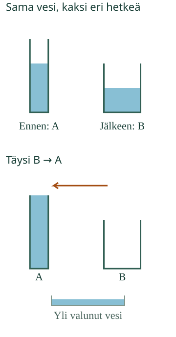

<link rel="stylesheet" href="lesson.css" />

<section data-teaching-step="1" data-lesson-role="teaching-step">
<section class="lesson-intro"><h2>Lisää vettä vai korkeampi pinta?</h2><p>Aava ottaa vettä retkelle. Korkea pinta voi hämätä. Kumpaan astiaan mahtuu enemmän?</p><p><strong>Vertaan veden määrää ja astioihin mahtuvaa määrää.</strong></p></section>
</section>


<section data-teaching-step="2" data-lesson-role="teaching-step">
<section><h2>Sama vesi, eri pinta</h2><p>Kaada aikuisen kanssa sama vesi toiseen astiaan. Jos mitään ei lisätä eikä valu pois, vettä on yhtä paljon. Pinnan korkeus voi muuttua.</p><figure data-lesson-role="worked-example"><figcaption>Veden määrä nyt ja astiaan mahtuva määrä ovat eri kysymyksiä.</figcaption></figure><h3>Kumpaan mahtuu enemmän?</h3><p>Täytä toinen astia ja kaada tyhjään toiseen. Jos toinen jää vajaaksi, siihen mahtuisi lisää. Jos vesi valuu yli, kaikki ei mahtunut siihen.</p><p data-lesson-role="question"><strong>Mieti:</strong> voiko matalaan leveään astiaan mahtua enemmän kuin korkeaan kapeaan?</p></section>
</section>


<section data-teaching-step="3" data-lesson-role="teaching-step">
<section data-water-lesson hidden><div data-audience-columns><div data-visual-column><h2>Kokeile kaatamalla</h2><p>Valitse koe. Paina Kaada loppuun tai etene vähän kerrallaan.</p><label>Koe<select data-case><option value="0">Sama vesi eri astiassa</option><option value="1">Täysi A kaadetaan B:hen</option><option value="2">Täysi B kaadetaan A:han</option><option value="3">Erinäköiset astiat</option><option value="4">Astiaan jäävä vesi</option></select></label><div data-model></div><p data-model-note></p></div><div data-response-column><p><button type="button" data-action="pour">Kaada loppuun</button><button type="button" data-action="step">Kaada vähän</button><button type="button" data-action="rewind">Koe alkuun</button></p><p><strong data-question></strong></p><div class="answers"><button type="button" data-answer="0" aria-pressed="false">Enemmän</button><button type="button" data-answer="1" aria-pressed="false">Vähemmän</button><button type="button" data-answer="2" aria-pressed="false">Yhtä paljon</button></div><p>Vaihda tai poista valinta painamalla vastausta.</p><button type="button" data-action="check">Tarkista</button><p data-feedback role="status" aria-live="polite">Tutki ja kokeile.</p></div></div></section>
<details data-lesson-role="hint"><summary>Apua</summary><p>Lue kysymys: vertaammeko vettä nyt vai astiaan mahtuvaa määrää? Katso kaato loppuun. Näkyykö vettä myös alustalla? Pelkkä korkea pinta ei tarkoita, että vettä on enemmän.</p></details>
</section>


<section data-teaching-step="4" data-lesson-role="teaching-step">
<details data-lesson-role="teaching-step"><summary>Kokeile lisää</summary><p>Kaada yksi ja sama mukillinen eri muotoisiin astioihin. Palauta vesi samaan mukiin: onko sitä yhtä paljon? Lisää sitten vähän vettä. Nyt määrä oikeasti muuttuu. Käytä alustaa ja tee koe aikuisen kanssa.</p></details>
</section>

<details class="teacher" data-lesson-role="teacher-note"><summary>Opettajalle: malli ja rajat</summary><p>Luokat 1–2; vaadittu M-MEAS-00. Tavoite on erottaa sisältävän veden määrä, täyden astian vetomitta ja pinnan korkeus. Litraa, desilitraa, kertolaskua tai pinta-alakaavoja ei oleteta. Aikuinen saa lukea kysymykset. Sana enemmän pitää sitoa kulloiseenkin kysymykseen. Osoittaminen tai oma selitys kelpaa keskusteluun ilman puheen vahvistuspainiketta.</p><p>Alkuperäiset piirrosastiat ovat suoraan edestä kuvattuja suorakulmaisia säiliöitä, joilla on sama syvyys. Vesi täyttää koko pohjan. Pinnan korkeus lasketaan todellisesta sisäisestä mallimäärästä ja pohjan leveydestä sekä samasta syvyydestä. Malli ei väitä, että jokaisen oikean astian tilavuuden voisi päätellä siluetista tai vesipinnan korkeudesta. Astioiden mittojen suhteet ja täyttymiset ovat johdonmukaiset. Piirros ei mallinna virtauksen nopeutta tai roiskeiden fysiikkaa; painike siirtää määrätyn vesimäärän.</p><p>Kukin koe aloitetaan erikseen annetulla lähtömäärällä ja tyhjällä kohteella. Ensimmäisessä kokeessa lähtöastia on vain osittain täynnä ja kaikki vesi mahtuu kohteeseen. Vetomittakokeissa lähtöastia on täynnä. Yli valunut vesi näkyy alustalla: astioiden ja alustan yhteismäärä säilyy. Vain vastaanottajassa oleva määrä voi olla pienempi kuin alussa. Koe alkuun palauttaa koejärjestelyn, ei väitä veden palaavan itsestään ilman toimintoa.</p><p>Offline: läpinäkyvät turvalliset astiat ja alusta, täysi lähde tyhjään kohteeseen. Säilyvyyskokeessa vältä hävikkiä ja tarkista palaamalla samaan mitta-astiaan. Samankokoisilla mukillisilla voi verrata vetomittoja; erikokoisten mukien pelkät lukumäärät eivät riitä. Lisähaaste: kaksi erimuotoista astiaa, joihin mahtuu yhtä paljon.</p><p>Ruututarkistus koskee vain annettuja mallimääriä ja valittua kysymystä, ei fyysistä kaatamista, itsenäistä päättelyä, viivästettyä muistamista tai yleistä hallintaa. Ei tallennusta tai oppijahistoriaa. Kaadon esitysvaihe ei muuta valmiin kaadon kysymyksen oikeaa vastausta. Kokeen tai vastauksen vaihtaminen nollaa vanhan palautteen. Oppijan omia selityksiä ei kerätä eikä arvioida automaattisesti.</p></details>
<section data-teaching-step="5" data-lesson-role="teaching-step">
<p data-lesson-role="question"><strong>Lopuksi:</strong> Voiko pinta nousta ilman, että vettä tulee lisää? Miten tarkistat?</p>
</section>

